Beer
Beer is an alcoholic drink brewed mainly from malted barley, hops, yeast and water although other sources of fermentable carbohydrate (eg. maize, wheat, rice) and other natural ingredients may be added to create different styles and flavours.
BarleyThe main constituent in beer; as grapes are to wine, barley is to beer. Barley grains are low in fat and protein but rich in starch. Starch is the grain's food reserve that is made up of chains of sugar molecules. In nature this would feed the growing barley plant but in brewing we hijack the starch to make beer! Malting starts the process of releasing the sugar and making it available for brewing. Brewers use specially selected varieties of barley that are particularly suited to being malted and making high quality beer. The maritime climate in the United Kingdom is particularly good for growing malting barley making British malt amongst the best in the world.
HopsA climbing plant that can grow to a height of over 20 feet, the hop's closest botanical relative is Cannabis! Hop cones contain a wealth of resins and essential oils which give the beer its distinctive bitterness and hop flavour. Contrary to public perception, beer is not "made from hops". Typically a barrel of beer is made from 20kg of malt and 150g of hops. Hops are used rather like a spice. Hops are picked in the late summer and dried in Oast Houses. Traditionally they are packed into tall sacks called pockets. Nowadays they tend to be compacted into pellets and vacuum packed in foil, like coffee, to preserve their freshness.
WaterA high quality is essential to the brewing process with four to six pints needed to produce every pint of beer. The particular salts naturally dissolved in local water supplies explains why some quite small towns such as Burton on Trent, Alton and Tadcaster could become home to several large breweries. The dissolved gypsum gave Burton beer keeping qualities which allowed them to be sold as far away as India.
YeastA microscopic member of the fungus family. The Latin name for brewing yeast is Saccharomyces cerevisiae - literally "beer sugar yeast"! Yeast grows on sugar producing alcohol and carbon dioxide in a process called fermentation. Yeast also produces a vast array of flavour compounds and much of the subtlety of beer flavour comes from the yeast strain and the fermentation conditions. Brewers use their own specially selected and jealously guarded yeast strains to produce the distinctive flavours of their own particular beers.
History
4000 BC In the middle east the Sumer people were fermenting a form of bread to make a fermented pulp which had an intoxicating effect - a "divine drink".
3000 BC The Babylonians had up to 20 different types of beer. The early beer was cloudy and unfiltered and was usually drunk through a straw to avoid drinking the solids from the brew, which could be very bitter.
1550 BC The Egyptians were also keen brewers and beer and malt has been found buried in the tombs of the Pharoahs to provide sustenance for the afterlife.
100 AD Beer was extensively drunk throughout the Roman Empire. The Romans preferred wine and introduced grapes into much of the Southern part of the Empire including the South of England. The local inhabitants tended to drink beer. Beer from this time had to be consumed fresh, was served cloudy and would have produced little or no foam. To aid its taste and keeping properties bitter herbs and spices may have been used.
The Middle Ages In the Middle Ages the largest brewers were the monasteries. The refreshing beer made a welcome break in a very austere lifestyle and could still be enjoyed during times of fasting. Monks soon acquired a taste for ale and records show that in some monasteries consumption up to five litres a day was allowed.
From 1000 AD Most beer was bittered with wild herbs such as bog myrtle (Myrica gale) often supplemented with lemon balm (Melissa officinalis), borage (Boragio officialis), St John's wort (Hypericium perforatum) or elderberries (Fructus sambuci nigrae).
The Introduction of Hops Hops are mentioned in records in Germany as early as 822 AD but their shoots may have been used by asparagus tips. Certainly Hidegarde of Bingen, writing around 1150 said that hops added to beer 'reduced the putrefaction' caused by spoilage organisms. The addition of hops slowly spread throughout Europe reaching Britain by the middle of the 15th century.
The Reinheitsgebot of 1516 The world's first food ingredient regulation is the German Purity Law or Reinheitsgebot which was first introduced in the Munich area in 1847 and extended to the whole of Bavaria in 1516. It later included the rest of Germany. The law stipulated that beer could only be brewed from water, hops and malt -- the use of yeast would come later, after it had been identified as the organism responsible for fermentation.
The Free Mash Tun Act 1880 Malt was first taxed in Britain in 1660, and the legislation prohibited the use of other cereals in brewing. This purity act continued until it was repealed by William Gladstone in 1880 and replaced by a tax on the sugar content of the wort prior to fermentation. The repeal followed a bad barley harvest and pressure from the colonial sugar growers to allow sugar cane to be used in the beer. The new law enabled "the brewer to brew from what he pleases and have a perfect choice of his materials and methods". The predominant beers of the day were dark quite sweet and malty - and often served at different alcoholic strength - strong ale, medium ale and weak ale made from different exracts of the same brew.
BBar's Selection
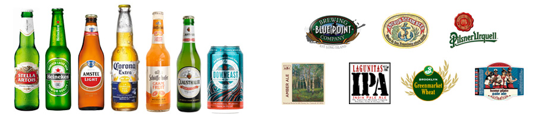What is ABV?ABV = Alcohol by volume (abbreviated as ABV, abv, or alc/vol) is a standard measure of how much alcohol (ethanol) is contained in a given volume of an alcoholic beverage (expressed as a volume percent). It is defined as the number of millilitres of pure ethanol present in 100 millilitres of solution at 20°C.
BOTTLES
Stella Artois
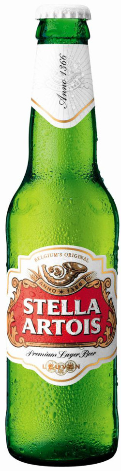History: 600 Years of Belgian Heritage. Stella is extremely proud of their Belgian roots. The story can be seen on every bottle of Stella Artois. If you look closely, hints of our origins are proudly displayed. By 1366 roots of Stella brewing tradition had been established in the city of Leuven, Belgium – which is also where the original Den Hoorn brewery was founded. Den Hoorn laid the foundation for the quality taste and standard Stella Artois is known for. The symbol of the Den Hoorn Brewery is proudly displayed in Stella Artois' cartouche to this day.
Why Artois? Sebastian Artois was admitted to the Leuven Brewer’s Guild as a Brew Master in 1708, and only nine years later purchased the Den Hoorn brewery. In memoriam, you can find his last name on the brewery and every bottle of Stella Artois around the world.
Why Stella? The Artois Brewery was so beloved internationally and locally, a special batch was created as a Christmas gift to the people of Leuven. That special batch was the first to officially include "Stella" in its name. "Stella", meaning star in Latin, pays homage to this original occasion, accompanied by a star on every bottle.
Style: Euro Pale Lager
Origin: Belgium
ABV: 5.0%
Learn more: Stella Website
Heineken
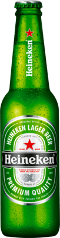History: Back in 1873 a young entrepreneur named Gerard Heineken discovered a passion for brewing. So he purchased a piece of land in what is now the centre of Amsterdam, built a brewery and set about perfecting the recipe that would soon become Holland’s first ‘premium’ lager beer. Word quickly spread and the name Heineken, stamped onto every single bottle, became a national symbol of quality. Over the next 140 years his brewery expanded and Gerard’s children and grandchildren explored new worlds, but the name on the bottle always remained the same.
Quality: At the heart of Heineken’s success lie pure, natural ingredients: malted barley, water, hops and a small but significant extra called A-Yeast. Heineken’s unique A-Yeast is responsible for the rich balanced taste and subtle fruity notes that have distinguished every single Heineken since the 19th century. Over the years our master brewers continued to perfect their craft. We learned that fermenting our beer in horizontal tanks instead of the industry-standard vertical creates the perfect pressure for our A-Yeast. That’s what gives each Heineken its characteristic balanced, rich taste. We also learned that it takes 28 days to brew a beautiful golden-yellow beer. Sure, that’s much longer than average, but we prefer patience above compromising on quality.
Style: Euro Pale Lager
Origin: Holland
ABV: 5.0%
Learn more: Heineken website
Amstel Light
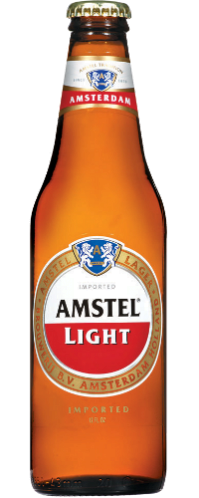Rich, hoppy flavor. Pleasantly smooth mouth-feel. Surprising complexity and fullness on the palate. Medium finish.
Made from the finest malted barley, carefully chosen hops, yeast, and water. Amstel Light contains less calories than a regular beer because it contain less carbohydrates. The use of sugars (glucose syrup) during our fermentation process, as well as malted barley, ensures that less residual carbs are in our final product. 95 Calories Never Tasted So Good!
Since Amstel began brewing their family of Amstel biers in 1870, we’ve exported Amstel to over 120 countries. And though they no longer need to rely on the chilly waters of the Amstel River to keep it cold, each brew still delivers an authentic taste of its native land. Amstel led the American light beer revolution with Amstel Light when it was first imported it in 1980. At just 95 calories per bottle, its unique mixture of barley and hops delivers rich, full beer taste.
Style: Light Lager
Origin: Holland
ABV: 3.5%
Learn more: Amstel website
Corona Extra
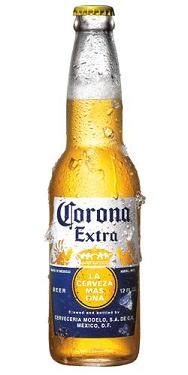Corona's refreshing, smooth taste offers the perfect balance between heavier European imports and lighter domestic beer. The aroma is fruity-honey with a touch of malt and the flavor is crisp and well-balanced between hops and malt, toward the malt side. Corona’s superior taste profile is due to the fact that our brewers take great care to use only the best ingredients available. Corona is made with the finest quality blend of filtered water, malted barley, hops, corn and yeast.
Corona Extra was introduced in the United States in 1981, and became the fastest growing imported beer in U.S. history. Corona Extra has been brewed and bottled in Mexico since 1925. Corona Extra is the #1 selling imported beer in the U.S. and the #5 selling beer overall.
Corona delivers a unique fun, sun and positive, carefree state of mind. It is a brand that doesn't take itself too seriously or try too hard to impress. It is defined by a laid back image originally created by Corona consumers when it first became available in the U.S. and which remains the Brand's foundation today.
Style: Pale Lager/American Adjunct Lager
Origin: Mexico
ABV: 4.6%
Learn more: Corona website
Schofferhofer Grapefruit
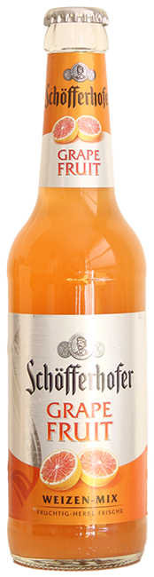Super easy drinking low ABV beer perfect for summer.
Schofferhofer Grapefruit is the unique combination of sparkling smooth Schofferhofer Hefeweizen with grapefruit flavoring. A refreshing well-rounded taste with tangy character and hints of sweetness is pleasing to the palate. Tastes best ice cold and right from the bottle. 50% of Schofferhofer Unfiltered Hefeweizen blended with 50% grapefruit drink.
Pronunciation: Shaw-Fur-Ha-Fur Listen
Style: Hefeweizen hybrid
Origin: Germany
ABV: 2.5%
Learn more: Schofferhofer website
Clausthaler Non-Alcoholic

Classic convinces with its freshly flavorful and full-bodied taste and premium quality. A brew that fulfills the most exacting requirements for consummate beverage enjoyment. Crisp flavorful.
Style: Lager
Origin: Germany
ABV: 0.45%
Learn more: Clausthaler website
Downeast Cider
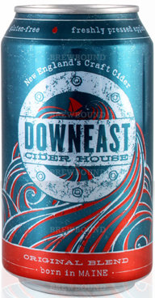Downeast Cider is an unfiltered cider, it is made from local apples and it is awesome! It should be offered over ice.
Inspired by the classic farm-fresh cider New Englanders know and love. Original Blend is the Auerbach to our Celtics, the Satisfaction to our Stones, the Agent K to our Men In Black: our foundation. From its humble beginnings in the basement of a Bates College dormitory, Original Blend is the result of hundreds of test batches aimed at crafting the best damn hard cider you’ve ever tasted. Original Blend is made from freshly pressed local apples – Red Delicious, McIntosh, Cortland, Gala – NEVER with concentrate or artificial flavors/sweeteners.
Style: Unfiltered Cider
Origin: Boston, Massachusetts
ABV: 5%
Learn more: Downeast Cider website
TAP/DRAFT
Pilsner Urquel
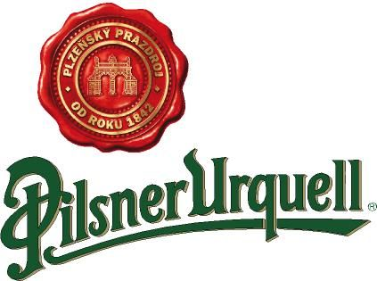While most lagers give away most of their taste profile in the front of the mouth, Pilsner Urquell only hints at its flavour there. Instead, it develops you in the middle, followed by a refreshing, clean finish and balanced aftertaste, practically inviting you to have another.
Pilsner Urquell, the world's first pilsner beer, is now produced by global brewer SABMiller. Pilsner Urquell was the world’s first-ever blond lager, making it the inspiration for more than two-thirds of the beer produced in the world today (which are still called pils, pilsner and pilsener). It is hopped with Saaz hops, a noble hop variety which is a key element in its flavour profile, as is the use of soft water and fire-brewing.
Style: Pilsner
Origin: Czech Republic
ABV: 4.4%
Learn more: Pilsner Urquell website
Blue Point Toasted Lager
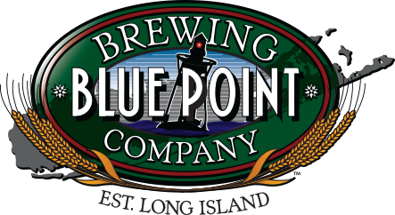Blue Point Toasted Lager is the brewery's flagship product. Copper in color this brew is made from Six different malts including: English Pale, Crystal, Munich, Carapils, Wheat and Belgian Caravienna. Toasted Lager displays a balanced flavor of malt and hop which makes it easy drinking. Special lager yeast is used to produce that long lasting, smooth finish. The "toasted" part of the name refers to our direct-fire brew kettle; hot flames imparts a toasted flavor to our most popular microbrew. Toasted Lager is an award-winning beer, highlighted by its gold medal from the World Beer Cup in 2006.
Style: Lager
Origin: Patchogue, New York
ABV: 5.5%
Learn more: Blue Point Brewery website
Anchor Steam
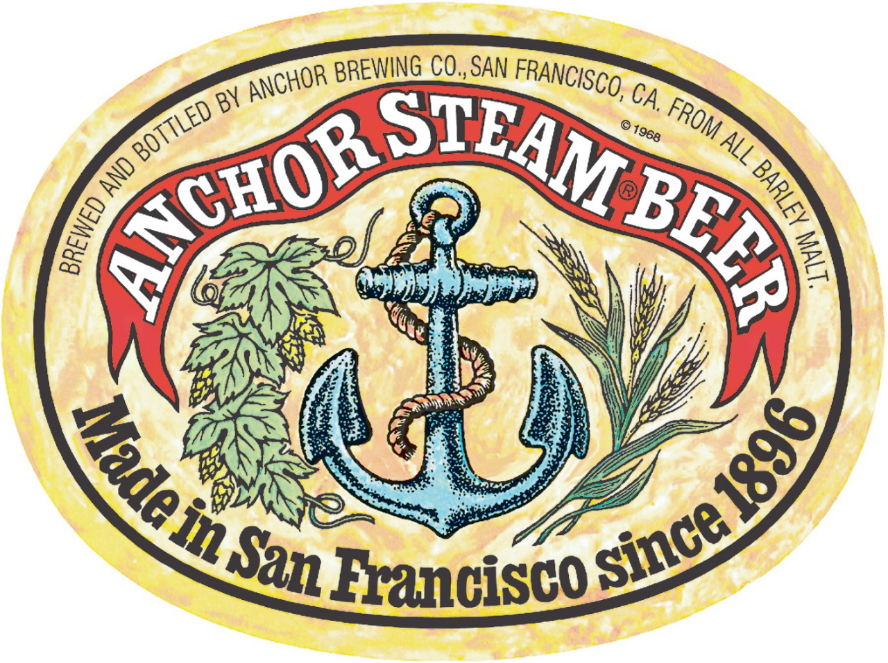Anchor Steam® Beer owes its deep amber color, thick, creamy head, and rich, distinctive flavor to a historic brewing process like none other. It is a process that combines deep respect for craft brewing tradition with many decades of evolution to arrive at a unique approach: a blend of pale and caramel malts, fermentation with lager yeast at warmer ale temperatures in shallow open-air fermenters, and gentle carbonation in our cellars through an all-natural process called kräusening.
Anchor Steam® Beer derives its unusual name from the 19th century when “steam” was a nickname for beer brewed on the West Coast of America under primitive conditions and without ice. While the origin of the name remains shrouded in mystery, it likely relates to the original practice of fermenting the beer on San Francisco’s rooftops in a cool climate. In lieu of ice, the foggy night air naturally cooled the fermenting beer, creating steam off the warm open pans. Once a nickname for any Californian or West Coast beer brewed under these conditions, today the name “steam” is a trademark of Anchor Brewing and applies only to the singular process and taste of our flagship brand - San Francisco’s original Anchor Steam® Beer. The classic of American brewing tradition since 1896.
Style: California Common/Steam Beer (what is it?)
Origin: San Francisco, California
ABV: 4.9%
Learn more: Anchor Steam website
Bell’s Amber Ale
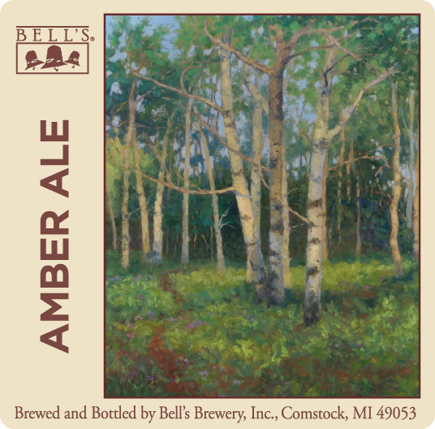Amber Ale deftly balances a mixture of toasted grain & light caramel notes with a range of floral, citrus and herbal hop notes, capped by a clean bitterness. This balance of flavors makes Amber Ale quite versatile as a food pairing option, not to mention being rather tasty in its own right. Whether serving as a jumping point to other styles or as a familiar standby, Amber Ale is central to the Bell’s portfolio.
Style: Amber Ale
Origin: Kalamazoo, Michigan
ABV: 5.8%
Learn more: Bell’s Brewery website
Lagunitas IPA
A well-rounded, highly drinkable IPA. A bit of Caramel Malt barley provides the richness that mellows out the twang of the hops.
Brewery: From points distant and beyond we all converged on Petaluma in 1993 and '94 with an unenunciated desire to be more than we were before. The core of Lagunitas came from Chicago, St Louis, Memphis, Walker Creek, and the highlands of Quincy.
The Chicago contingent initiated the brewing and the gravitational effect of its suchness did the rest. We all loved the beer but the mission was larger than the ordinary joy of a hoppy-sweet quaff. It was driven unseen by an urge to communicate with people, to find our diasporidic tribe, and to connect with other souls adrift on a culture that had lost its center and spun its inhabitants to the four winds to wander lost and bereft with a longing to re-enter the light. Beer, we have learned, has always been a good lubricant for social intercourse!
The Lagunitas Brewing Co. was not so much an act of ordinary 'foundling' as it was willed into being by the unspoken desire of supportive beer-lovers in Northern California after which they continued to nurture their creation and urged us forward to fulfill the unifying needs of that same beer-loving diaspora from coast to coast and beyond. It is good to have friends!
Style: IPA
Origin: Petaluma, California
ABV: 6.2%
Learn more: Lagunitas website
Brooklyn Greenmarket Wheat
Brooklyn Greenmarket Wheat is a celebration of New York State agriculture, uniting local ingredients to create a beer with a mission.
We work with GrowNYC's Greenmarket to source grain for the brew - they connected us to Lakeview Organic Farms to provide 70% of the grain used in our mash. The hops are grown on a family farm outside of Syracuse owned by our own Technical Director Mary Wiles, who grew up there.
Brewery: Like our namesake borough, the Brooklyn Brewery is made up of a rich collection of characters from all over the world. In our Williamsburg home, these characters are dedicated to brewing and selling great beer and enriching the communities we serve. Together, these Brooklyners have assembled the skills needed to transform a home brewing hobby into an independent brewery with a brand that has become an international beacon for good beer.
Starting with our flagship Brooklyn Lager, the portfolio of Brooklyn Brewery has grown to a wide-ranging collection of beers, always keeping an eye to traditional brewing techniques, even as Brewmaster Garrett Oliver and his team seek to push the boundaries of beer. It’s now easy to find a smooth Brooklyn Lager, hoppy East IPA or roasty Brown Ale in your favorite watering holes. BLAST!, Sorachi Ace and Greenmarket Wheat are standing by on shelves near you, ready to be taken to parties, barbecues or your favorite chair. Each season brings beloved seasonals like Brooklyn Summer Ale and Brooklyn Black Chocolate Stout back to the shelves and taps, ushering in the joys of the changing weather.
Style: Hefeweizen
Origin: Brooklyn, New York
ABV: 5.0%
Learn more: Brooklyn Brewery website
Coney Island Home Plate Pale Ale
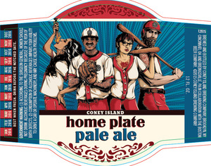Home Plate Pale Ale is a straw-colored, medium-bodied, moderately hopped ale balanced by a citrus and fruit hop aroma and a clean bitterness.
Style: American Pale Ale
Origin: Brooklyn, New York
ABV: 4.4%
Learn more: Coney Island Brewery website
Visual Taxonomy
The art of understanding beer is not an easy thing to master if you don't know where to start. Below are most major beer types and their respective categories.